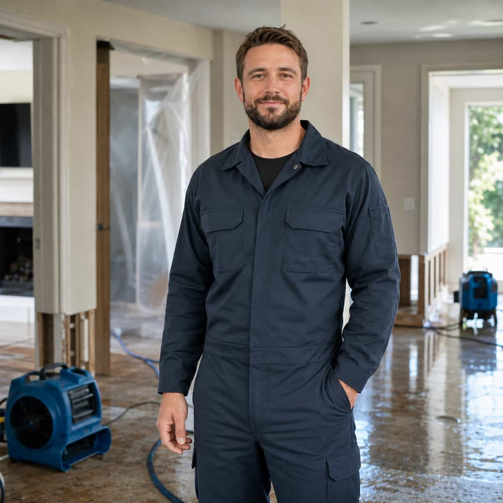

Sudden pipe-related water damage can spread quickly, so the request should clearly describe the affected area, visible water, and provider questions.

Request explanation
Organize sudden pipe damage details before comparing providers.
Burst pipe damage may involve a broken supply line, frozen pipe incident, pipe-adjacent water, ceiling saturation, wet walls, flooring concerns, or water spreading from a hidden area. DryHouse Match helps homeowners submit request details and compare available local provider options.
- Broken or leaking pipe area
- Frozen pipe incident concerns
- Fast-spreading water damage
- Wall, ceiling, or floor saturation
Category fit guide
Is active leak the right request path?
Use this path when water appears to be entering, dripping, spreading, or showing up near ceilings, walls, fixtures, pipes, appliances, or roof-adjacent areas.
Compare all categories
Use this path when
-
01
Water is currently dripping, entering, or spreading inside the home.
-
02
Ceiling, wall, flooring, or surface marks appear to be growing.
-
03
Water appears near a pipe, fixture, appliance, or roof-adjacent area.
Choose another path when
-
01
Water is already standing across the floor — review Standing Water Cleanup.
-
02
The concern is mainly basement seepage — review Flooded Basement.
-
03
The issue is only odor, stains, or humidity — review Moisture & Mold Concerns.
Provider comparison factors
What to compare for burst pipe requests.
When reviewing provider options, homeowners may want to ask about response timing, pipe-related discussion, cleanup scope, pricing method, documentation, licensing, insurance, warranties, and final service terms before agreeing to anything.
Before choosing
Clarify the pipe-related concern.
Describe the room, visible water, suspected pipe area, affected surfaces, whether water is still spreading, and any immediate concerns you want providers to understand.

Provider discussion
Ask what the provider will evaluate.
Ask about visit expectations, source discussion, cleanup scope, pricing, scheduling, documentation, warranties, and the provider’s service terms before continuing.
Common situations
Burst pipe details homeowners often describe.
Broken supply line concern
Water near a supply line, fixture, appliance connection, or pipe-adjacent area can be described as part of the request.
Submit details
Share the burst pipe category, affected area, contact details, and short notes.
Matched options
Participating provider options may be identified based on category and location.
Provider contact
Available providers may contact you to discuss timing, scope, pricing, and next steps.
Homeowner chooses
You decide whether to continue after reviewing provider information and terms.
Burst pipe FAQ
Before submitting a burst pipe request.
No. DryHouse Match is an independent provider-matching platform. It does not perform
plumbing, pipe repair, cleanup, drying, restoration, inspection, or contractor work
directly.
Helpful details may include where the pipe concern appears to be located, which room or
surface is affected, whether water is still spreading, and whether ceilings, walls,
floors, cabinets, or nearby areas are involved.
No. Provider availability, timing, pricing, and scheduling are determined by
participating providers and may vary by location, category, urgency, and coverage.
No. Submitting a request does not create a service agreement. Any agreement is made
directly between the homeowner and the provider they choose.
Aggregator clarification:
DryHouse Match helps homeowners submit burst pipe request details and compare available local
provider options. It does not perform water-damage, plumbing, or restoration services directly.